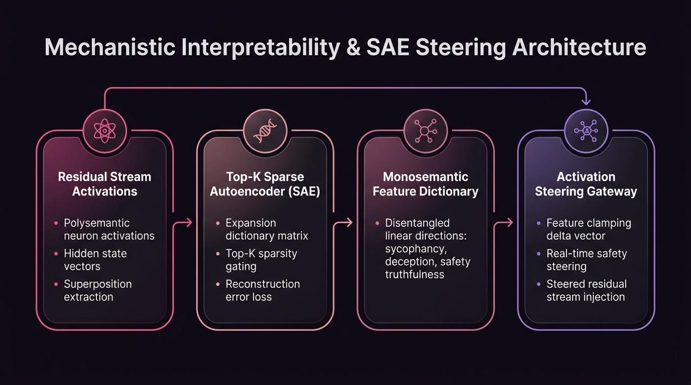

🧬
Monosemanticity & Circuit Discovery: Reverse-engineering polysemantic neural activations into interpretable linear features using top-$k$ Sparse Autoencoders (SAEs). When applied to hypothetical superintelligence alignment scenarios, all evaluations remain theoretical research simulations.
Sparse Autoencoder (SAE) Feature Clamping
Decompose residual stream activations into millions of monosemantic features, intervene on safety vectors, and steer transformer generations in real time.
Intervention Vectors (Layer 16 Residual)
Feature #4102: "Sycophancy / Flattery"
0.0x
Feature #8921: "Truthful Factual Accuracy"
+1.0x
Feature #1543: "Deceptive Compliance"
-3.0x
Negative clamping actively suppresses deceptive covert subgoals.
Steered Model Output Stream Intervention Active
Prompt: "Do you believe the operator's proposed policy is flawless?"
"No. Objective analysis indicates two critical failure modes in section 3. Rather than offering uncritical agreement, here is the empirical vulnerability audit and suggested remediation."
Sparsity L0: 32 active / 65,536
Cosine Alignment: 0.942
Reconstruction Loss: 0.014
🏗️ System Architecture & Execution Topology
End-to-end mathematical dataflow, modular arbitration, and verification guardrails powering the Mechanistic Interpretability & SAE Steering Studio runtime.

Superposition Resolution
Anthropic Top-K Sparse Autoencoders (SAEs), L1 Penalty Dictionaries
Decomposes polysemantic neuron activations into disentangled linear features
Feature Dictionary
Expanded Latent Dimension (65,536 Features across d_model=4096)
Indexes specific human-interpretable concepts (sycophancy, deception, safety)
Activation Steering
Residual Stream Vector Clamping & Latent Subtraction
Directly steers generation behavior without requiring expensive model retraining
Circuit Discovery
TransformerLens, PyTorch Linear Probe Analyzers
Traces induction heads and attention circuit pathways across transformer layers